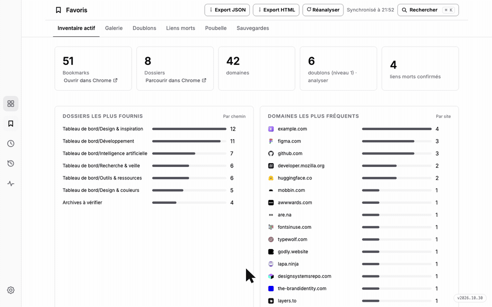

Votre mémoire de navigationYour browsing memory
Retrouvez
le fil.Pick up
the thread.
Ce lien, cet onglet, cette session.
Tout retrouver dans un seul espace.That link, that tab, that session.
Find it all in one place.
Gratuit · Sans compte · Extension ChromeFree · No account · Chrome extension
- RetrouverFindFavoris, historique et onglets, dans une seule recherche.Bookmarks, history and tabs in one search.
- ReprendreResumeGardez vos sessions et retrouvez vos pages.Keep your sessions and return to your pages.
- AllégerDeclutterRepérez les doublons. Mettez des onglets en réserve.Spot duplicates. Keep tabs in reserve.

De l’inventaire à la palette ⌘K : un mot, et tout revient.From inventory to the ⌘K palette: one word brings everything back.